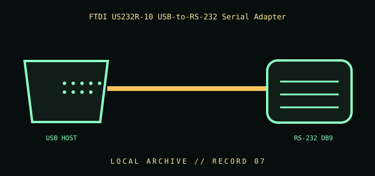

[ INDIVIDUAL COMPONENT // CABLES & ADAPTERS ]
FTDI US232R-10 USB-to-RS-232 Serial Adapter
An active USB-to-serial adapter containing a USB-to-UART bridge and RS-232 line interface. It converts between USB and RS-232 signaling; it is not a passive USB-to-TTL lead.

IDENTIFICATION / SAFETY: Match the complete part number, connector direction, host requirements, and revision to manufacturer documentation. A matching connector shape is not proof of protocol or electrical compatibility.
Specifications
| Catalog subcategory | Serial and converter cables |
|---|---|
| Catalog identity | FTDI US232R-10 USB-to-RS-232 converter cable |
| Protocol / standard | FTDI US232R-10 product family; USB host connection to RS-232 serial interface. Use FTDI’s current/archived product documentation for exact connector, driver, and revision details; no unverified baud-rate or cable-length claim is made here. |
| Connector ends | USB HOST → RS-232 DB9; direction and gender are specified where the manufacturer source verifies them. |
Compatibility & electrical hazards
The far end is RS-232 electrical signaling, not 3.3 V/5 V TTL UART. Install the correct FTDI driver and verify operating-system/device support. Confirm the serial connector/pinout and device role; do not apply RS-232 voltage to a logic-level UART header.
Archival & handling notes
Keep the adapter, product label, driver notes, and any device-specific configuration together. Record OS/driver version used during a successful test; inspect the molded cable and connector before use.
For collection records, photograph both connector faces and all labels; record manufacturer, complete SKU, revision, provenance, condition, and the source document used for identification. Do not apply power to an unidentified or damaged cable.
Sources & further reading
- FTDI — US232R-10 product and documentationManufacturer documentation for the active USB-to-RS-232 adapter and driver support.
- FTDI — USB-to-serial product supportManufacturer device documentation and driver archive.
Source values are limited to the linked manufacturer or standards documentation. Features not stated there are intentionally left unspecified; confirm the exact cable revision and host-device manuals before use.